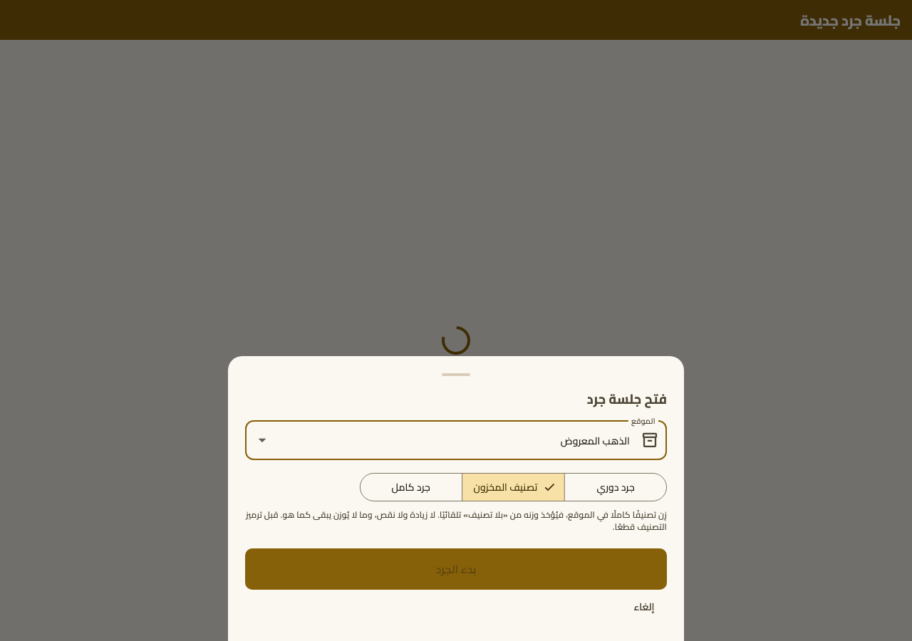
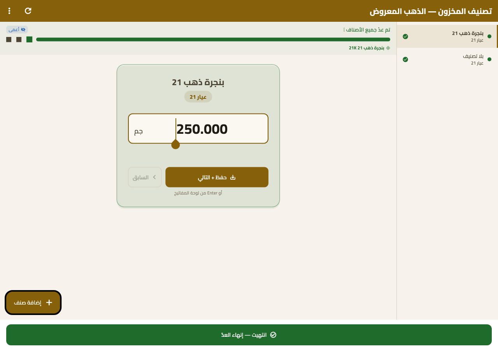
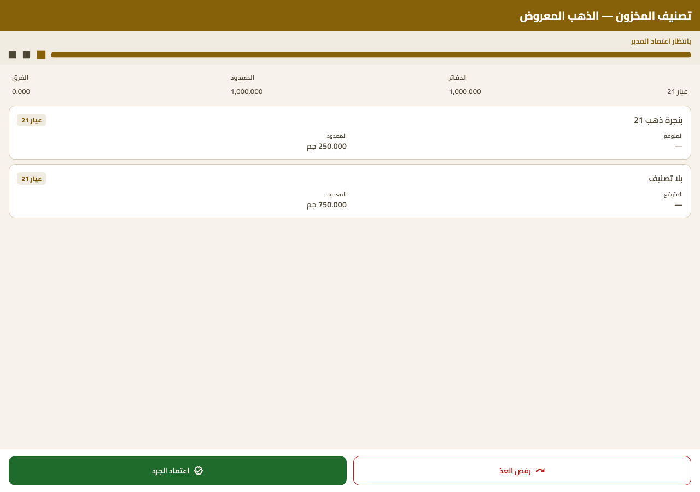
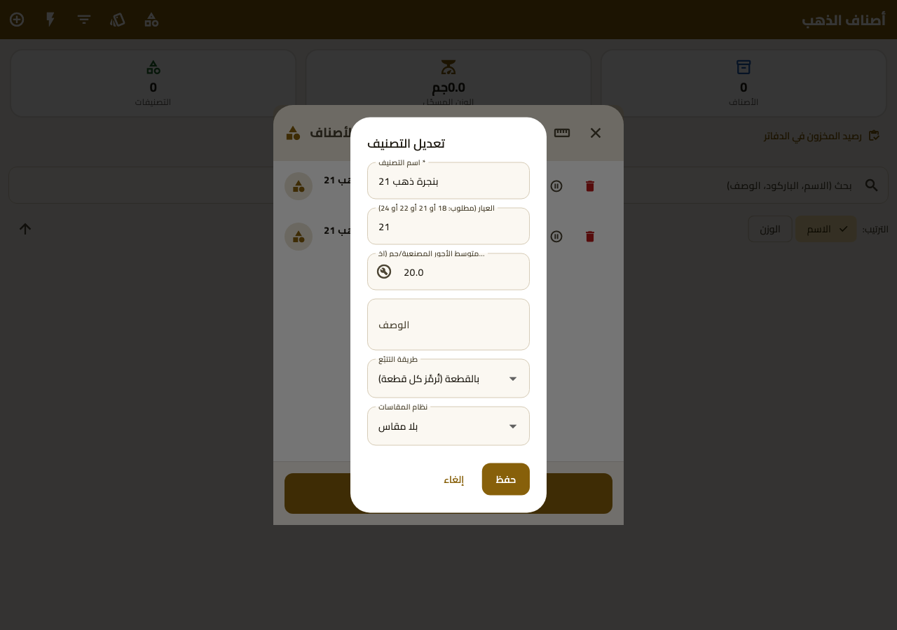
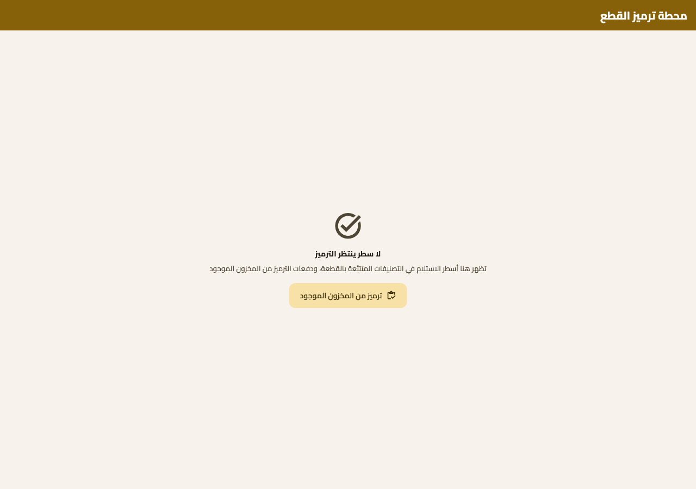
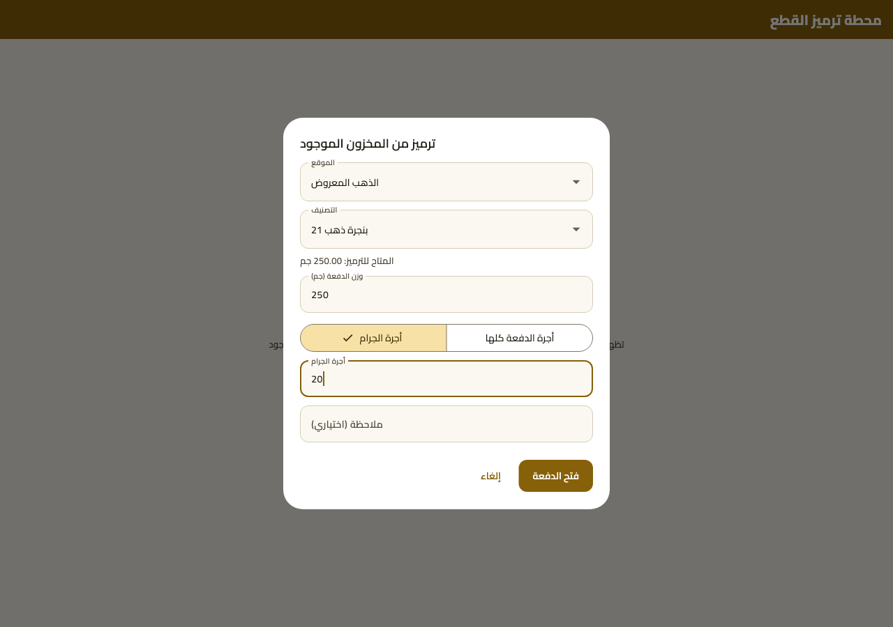
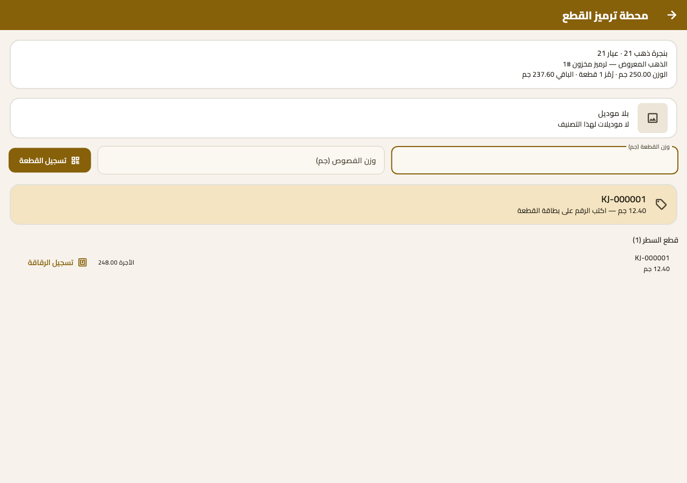

التصنيفات تُرمَّز واحدًا بعد واحد: البناجر أولًا، ثم الأطقم، حتى آخر تصنيف. ولكل تصنيف ثلاث مراحل: يُوزن في «الجرد الفعلي»، ثم يُحوَّل إلى المتابعة بالقطعة، ثم تُرمَّز قطعه في المحطة.
مثال الصور (أرقام توضيحية):الموقع الذهب المعروضعيار 21 «بلا تصنيف» 1,000.00 جمالتصنيف بنجرة ذهب 21
قبل البدء مرة واحدة · المدير
من «الإعدادات» يشغّل المدير مفتاح «ترميز المخزون الموجود قطعًا». يُسجَّل اليوم يومًا لبدء الترميز، ويظهر باب «محطة ترميز القطع» في الرئيسية. ولا يحتاج المفتاح أن يُشغَّل مرة ثانية.
المرحلة الأولى: وزن التصنيف الجرد الفعلي
الهدف أن تعرف الدفاتر كم جرامًا من هذا التصنيف في الموقع. هو اليوم محسوب على «بلا تصنيف».
1
افتح جلسة «تصنيف المخزون»
«الجرد الفعلي» ← جلسة جرد جديدة.
اختر الموقع، ثم نوع الجرد «تصنيف المخزون»، ثم «بدء الجرد».

تحت الأنواع الثلاثة سطر يشرح ما يفعله النوع المختار.
2
زِن التصنيف كله في هذا الموقع، واكتب وزنه
اجمع كل البناجر في الموقع، وزنها معًا، واكتب الوزن: 250.000.
«حفظ + التالي». يأخذ النظام الوزن من «بلا تصنيف» وحده، فيصير 750.000.
لا تكتب شيئًا في سطر «بلا تصنيف».
ثم «انتهيت — إنهاء العدّ».

القائمة على اليمين فيها التصنيف الموزون و«بلا تصنيف» الذي يُعدَّل وحده.
زِن التصنيف كاملًا لا جزءًا منه. بعد الخطوة 4 لا يُباع من التصنيف إلا قطعه المرمَّزة. فإن وُزن جزء منه، بقي الباقي على «بلا تصنيف»، وصار في الدفاتر في غير تصنيفه.
3
المدير يعتمد
السطر الأعلى لكل عيار: الدفاتر 1,000.000، والمعدود 1,000.000، والفرق 0.000.
«اعتماد الجرد». تُكتب الجرامات على تصنيفاتها، ولا يُكتب قيد زيادة أو نقص.

وزن العيار في الموقع لا يتغير. الذي يتغير توزيعه على التصنيفات.
إن كان الفرق في أي عيار غير صفر، يرفض النظام الاعتماد. الفرق يعني أن الوزن لم يُكتب صحيحًا.
المرحلة الثانية: التحويل إلى القطعة أصناف الذهب · المدير
4
اجعل التصنيف «بالقطعة»
«أصناف الذهب» ← التصنيفات ← تعديل «بنجرة ذهب 21».
طريقة التتبع: «بالقطعة (يُرمَّز كل قطعة)»، ثم «حفظ».

من هذه اللحظة لا يُباع من البناجر إلا ما رُمِّز.
بعد التحويل لا يُباع من البناجر غير المرمَّزة شيء. لذلك يُحوَّل التصنيف في يوم يبدأ فيه الترميز، ويُنهى ترميزه في يوم أو يومين.
المرحلة الثالثة: ترميز القطع محطة ترميز القطع · فريق الترميز
5
افتح المحطة
«محطة ترميز القطع» ← «ترميز من المخزون الموجود».

6
افتح دفعة
الموقع والتصنيف. يظهر تحتهما المتاح للترميز: 250.00 جم، وهو ما وُزن في الخطوة 2.
وزن الدفعة: 250 (أو جزء منه).
الأجرة: «أجرة الجرام» 20، أو «أجرة الدفعة كلها» مبلغًا واحدًا.
«فتح الدفعة».

الأجرة اليوم واحدة للدفعة كلها. وفي الإصدار القادم تُكتب أجرة كل قطعة عند تسجيلها، وتُحدَّث هذه الصور معه.
7
زِن كل قطعة وسجّلها
ضع القطعة على الميزان واكتب وزنها: 12.40. وإن كان فيها فصوص فاكتب وزن الفصوص في خانتها.
«تسجيل القطعة». يظهر رقمها KJ-000001: اكتبه على بطاقة القطعة، أو اطبع رقاقتها من «تسجيل الرقاقة».
أجرة القطعة يحسبها النظام: 12.40 × 20 = 248.00.
الباقي في الدفعة 237.60 جم. استمر قطعة بعد قطعة حتى يقترب من الصفر.

رأس الشاشة: الوزن، وعدد القطع المرمَّزة، والباقي. وتحته قائمة قطع الدفعة.